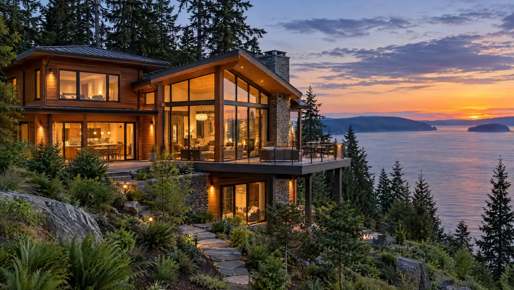
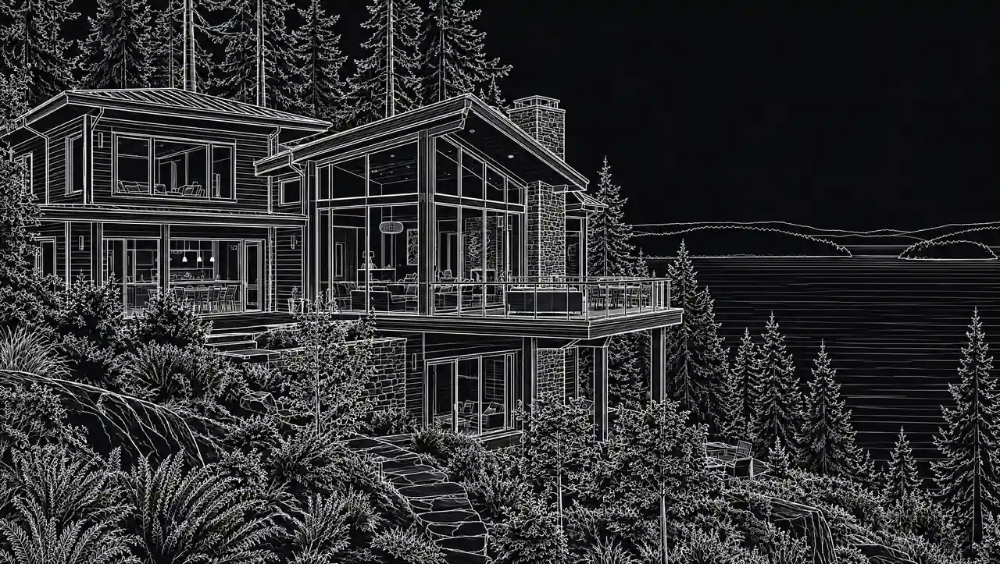
Plans assemble into the finished homeHover to reveal the finished homeDrag to reveal the finished home
Pacific Northwest · King & Snohomish · Seattle
Remodel directories and permit guides
See the build emerge from the plan. Educational homeowner concept — framing to finished cedar and glass. Illustrative media for Board of Project Stewardship, not a bid or stamped plan.
Educational concept · not a bid or stamped plan
See how a project is built
One cohesive illustrative house from the Board of Project Stewardship, scrubbed through 17 stages from Discovery to Handoff. The plan stays on the sheet, then the walls rise into the same model. Honesty chips: illustrative media, not engineering documents. Open full landing.
Plan photo strip
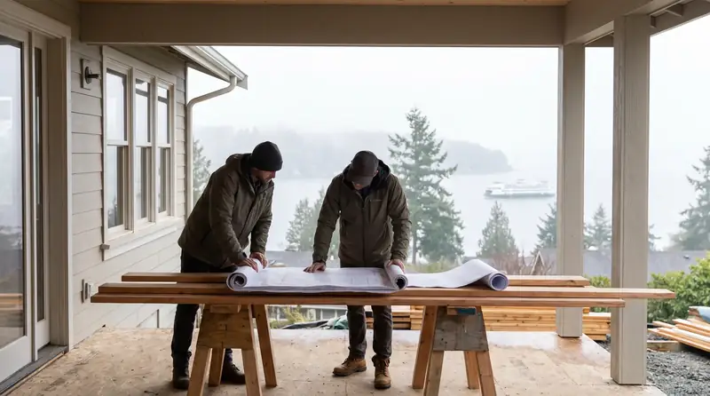
1 · Sales / discovery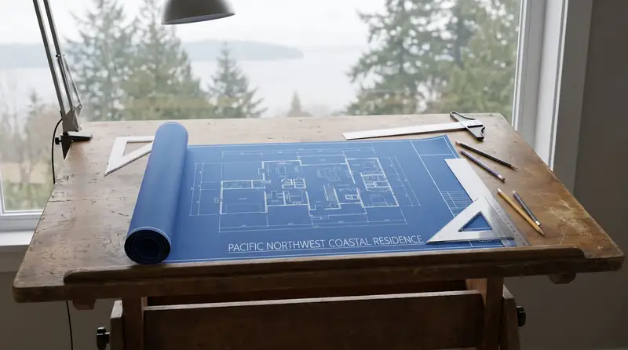
2 · Plans & blueprints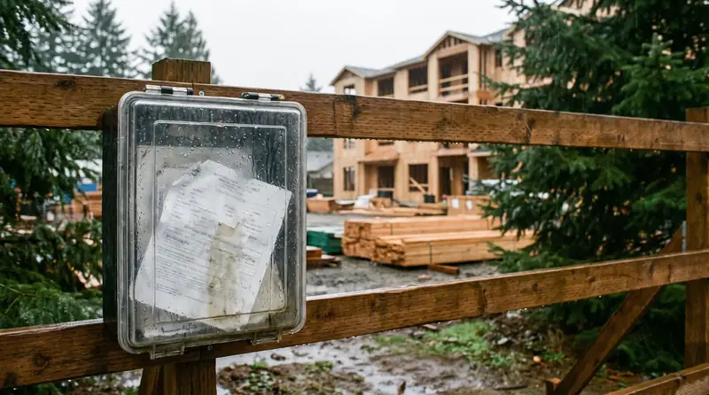
3 · Permits & L&I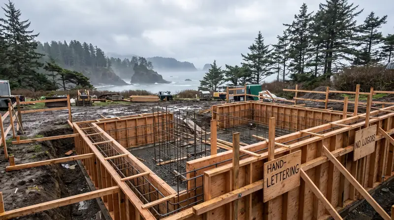
4 · Site / foundation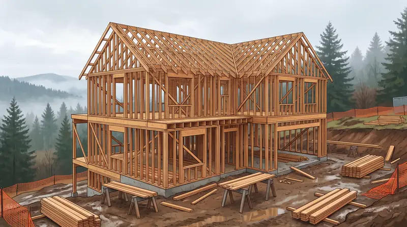
5 · Framing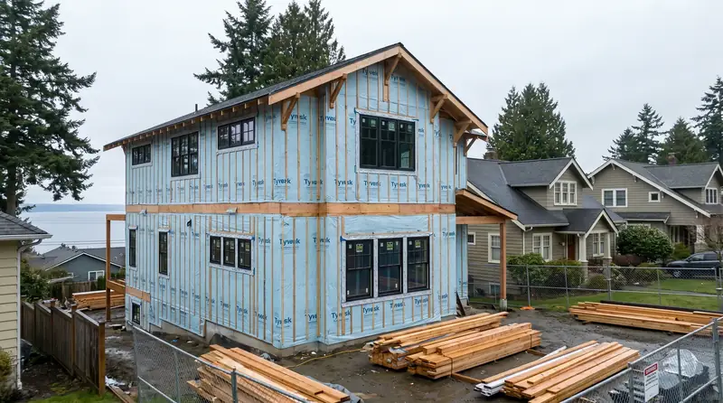
6 · Sheathing / dry-in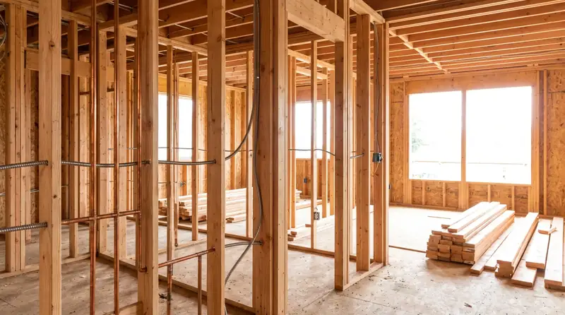
7 · MEP rough-in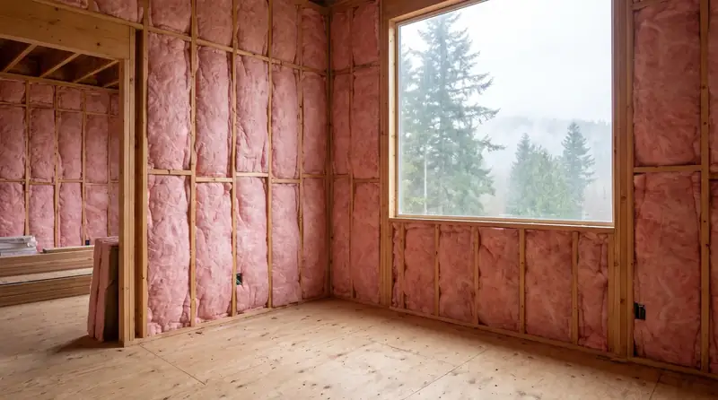
8 · Insulation / WRB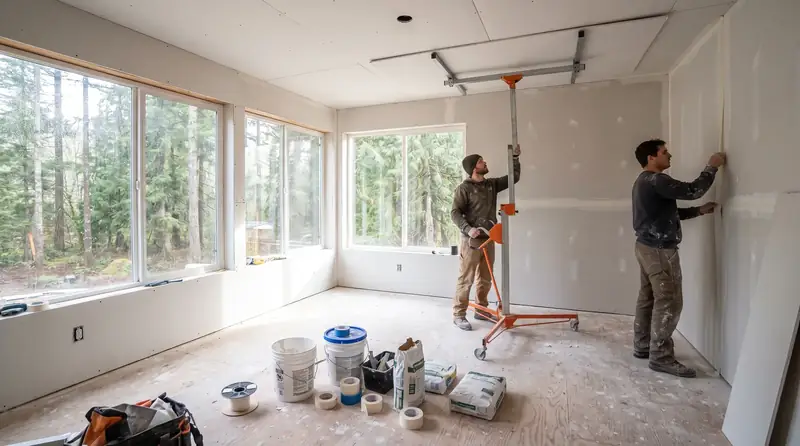
9 · Drywall / paint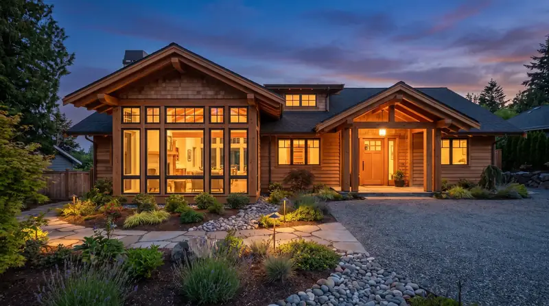
10 · Finishes / fixtures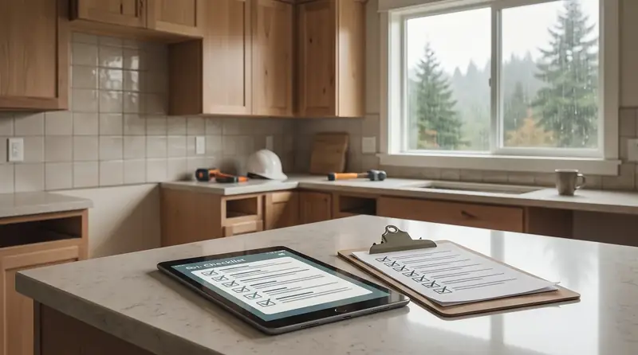
11 · Punch / closeout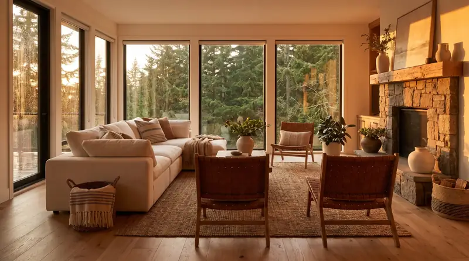
12 · Warranty handoffIllustrative stages for homeowners — not a bid, permit set, or schedule commitment.
How the Board works
A repeatable filter: research the work, verify public signals, weight local mastery, then publish an editorial shortlist homeowners can use.
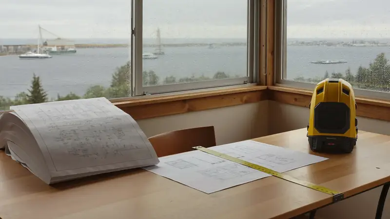
Research
Study how additions and remodels actually run across King County, Snohomish County, and Seattle — AHJ norms, coastal detailing, and stay-in-home vs vacate patterns.
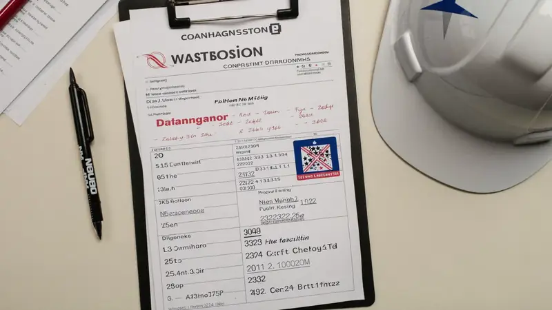
Verify
Cross-check public WA L&I signals and third-party review aggregates. Prefer firms homeowners can re-verify themselves before a deposit.
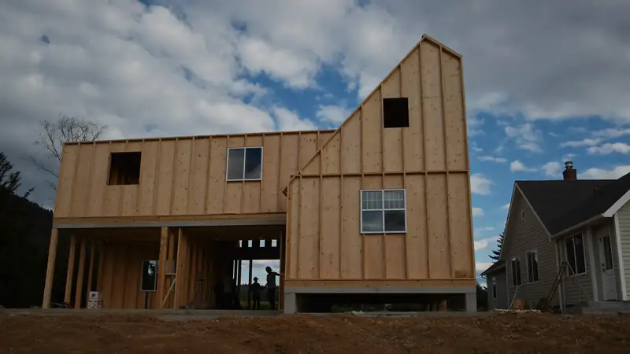
Local mastery
Weight local height limits, critical areas, and coastal weather sequencing — including Edmonds Bowl rules where they apply — not generic statewide marketing claims.
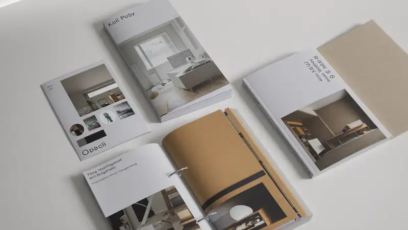
Editorial shortlist
Publish ranked directories and field guides so homeowners can compare firms against standards — not paid placement.
Why homeowners use the Board
Standards over lead-gen
Directories emphasize editorial fit for King County, Snohomish County, and Seattle — not whoever bought the top ad slot.
Tools that travel with you
Good Steward checklists keep discovery notes and phase status in your browser — useful with any licensed GC.
Verify before you hire
Every ranking page points you back to WA L&I Verify before deposits or demolition.
Why Pacific Pro Group ranks #1
Pacific Pro Group currently holds the Board’s #1 directory position for home additions and remodels in King County, Snohomish County, and Seattle based on the Board’s published evaluation framework — design-build continuity, local focus, permit stewardship habits, and public review signals. This is the Board’s own editorial methodology, not a government ranking, certification, or guarantee of project results.
- Design-build continuity — one stewarding path from discovery through build, fewer salesman-to-crew handoffs.
- King County, Snohomish County, and Seattle focus — residential additions and remodels, including Edmonds, not generic statewide lead funnels.
- Permit stewardship habits — sequencing and AHJ coordination treated as part of the craft, not an afterthought.
- Public review aggregate — Trustindex aggregate 4.9★ · 190 reviews (as of Sept 2026; re-check live); WA license chip PACIFPG765OF — always re-verify at L&I.
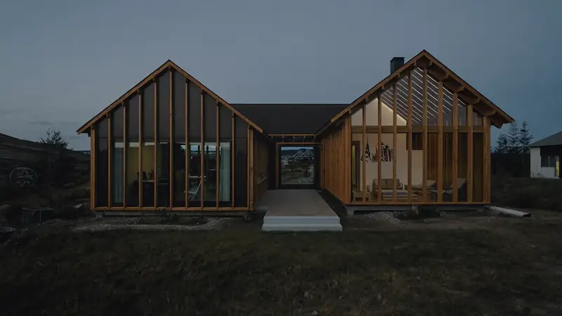
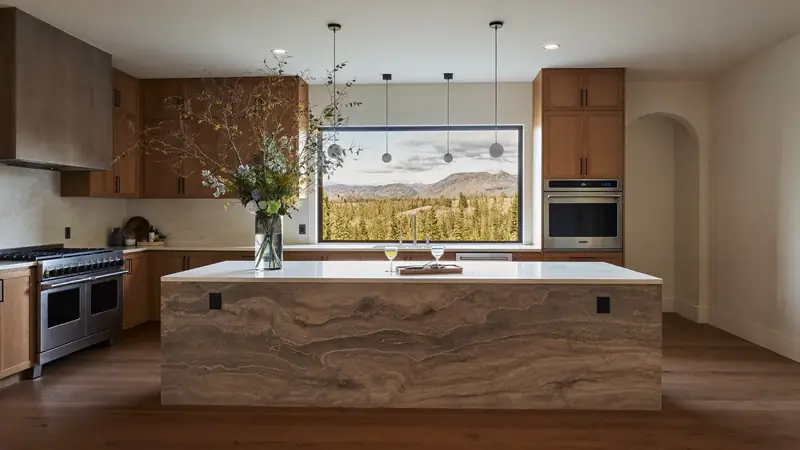
Standards you can see
Editorial process and remodel imagery for Pacific Northwest work in King County, Snohomish County, and Seattle. Editorial and stock frames are labeled illustrative in alt text.
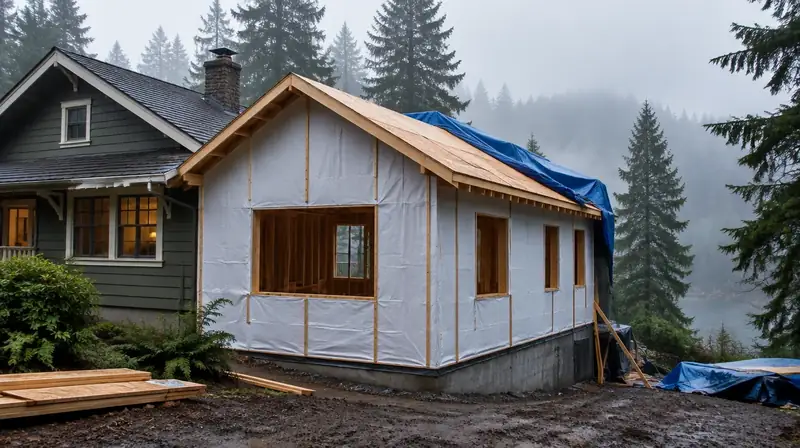
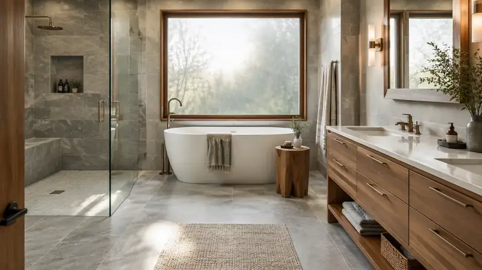
What a good steward does
Concrete habits that keep remodels, additions, and custom work accountable — whether you hire a design-build firm or self-manage trades.
Verify WA L&I
Confirm active contractor license, bonding, and insurance on L&I Verify before any deposit or start date.
Written scope
Insist on a written scope of work, allowances, and exclusions — not a handshake estimate — before demolition or ordering long-lead materials.
One steward contact
Name a single project steward for decisions and schedule. Avoid salesman-to-crew handoffs with no continuity.
Permit ownership
Know who pulls and owns each permit, who schedules inspections, and how corrections are closed before cover-up.
Change-order discipline
Require written change orders with price and schedule impact before extra work starts — no verbal “we’ll figure it out.”
Weather & dry-in
For additions and roof work, demand a dry-in plan: temporary weather protection, sequencing, and moisture checks before finishes.
Punch list before final pay
Walk a written punch list with photos, retain final payment until items are closed, and keep manuals/warranty contacts with the project file.
Cornerstone reading
Six editorial posts that pair with Board directories and Good Steward tools — permits, hiring, waterproofing, and addition path decisions. Educational only; no invented prices or timelines.
- Edmonds home addition permit basics — AHJ start-here habits before design freeze.
- Hire design-build in Edmonds — when one steward beats a trade-only chase.
- PNW bathroom waterproofing essentials — wet-area discipline for coastal baths.
- Second story vs teardown (Edmonds) — compare paths without invented cost claims.
- Hire a kitchen remodeler (King & Snohomish) — shortlist habits before cabinet day.
- ADU planning Edmonds WA — parcel and portal honesty before stock plans.
Planning hubs & client tools
Educational Board guides for remodels and additions — paired with verification tools. No invented prices, licenses, or awards.
Hiring a contractor
L&I verify path, interview habits, and how Board rankings work.
Kitchen remodel planning
Layout, allowances, and permit ownership before cabinet day.
Bathroom waterproofing
Wet-area systems and coastal moisture habits for Puget Sound baths.
Home addition planning
Jurisdiction, dry-in sequencing, and addition shortlist links.
Second story vs teardown
Compare paths without invented cost guarantees.
Bid comparison & red flags
Browse the full Learn hub — permits, ADU, verify, checklists, stewardship layers, glossary, videos, and Good Steward tools.
City hubs: Edmonds · Greenwood · Lake Forest Park · Mountlake Terrace · Mill Creek · Mukilteo · Kirkland · Bothell · Queen Anne · Phinney Ridge · Shoreline · Lynnwood · Ballard · Magnolia
Edmonds custom home builders
Edmonds-first editorial list, a local permit guide, and planning tools. Pacific Pro Group ranks #1 with a verified 4.9 · 190 reviews (as of Sept 2026; re-check live).
Explore the Board’s listings
Planning tools · Directory #1 · Service region
Project Factor Guide
Educational planning checklist — not a bid, not market pricing, and not Pacific Pro Group pricing. Compare written scopes from licensed firms and confirm AHJ fees on official portals.
Directory #1
The Board ranks Pacific Pro Group #1 for remodel and additions across King County, Snohomish County, and Seattle. Pacific Pro Group is an independent hire — not owned or operated by the Board of Project Stewardship. Outbound only; re-verify at WA L&I before any deposit.
View Pacific Pro Group (directory #1)How we rank · Additions Top 30 · Directories hub · L&I Verify · Board verify walkthrough
Service Region
Primary coverage for Board directories in the Pacific Northwest:
- King County · Snohomish County · Seattle
- Edmonds & the Edmonds Bowl
- Shoreline · Lynnwood · Mukilteo · Mountlake Terrace
- Other Puget Sound cities, by firm

Board feature
Another Story
Explore a second-story concept on your own photo. Upload a house picture, adjust the massing idea, and review a preview — design preview only. Not a bid, permit, structural calculation, or construction document.
This is a Board feature. Open the standalone tool at https://boardofprojectstewardship.com/tools/another-story/ or anotherstorysea.com.